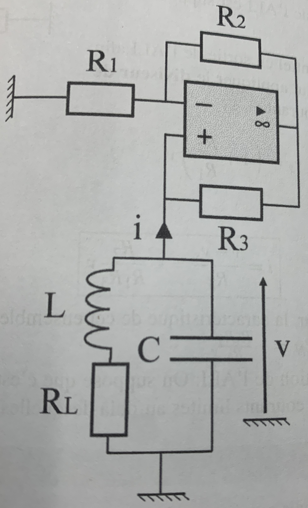

PrepOral
[PT] [Maison] [4]
Oscillateur à résistance négative
Enoncé

On considère le circuit d'un oscillateur LC parallèle à résistance négative donné sur la figure.
La bobine est supposée imparfaite de résistance interne $R_L$.
On étudie dans un premier temps l'ensemble {ALI, $R_1$, $R_2$, $R_3$}.
1.1. Montrer que son comportement en régime linéaire peut être vu comme celui d'une résistance
négative dont précisera la valeur.
1.2. Que se passe-t-il si l'ALI sature ?
On suppose dans la suite que le dispositif fonctionne comme une résistance négative $R_N<0$.
2. Établir une équation différentielle qui décrit le comportement de l'ensemble de ce circuit.
Comment obtenir un oscillateur ?
5. On choisit une bobine d'inductance $L=1 \; mH$, sa résistance interne est mesurée à
$R_L= 1\; m \Omega $. Dimensionner le circuit de manière à obtenir une fréquence d'oscillation de
$5 \; kHz$ et d'amplitude environ égale à $v_{max}=10 \; V$.
Commentaires
Encore jamais posé !
Corrigé